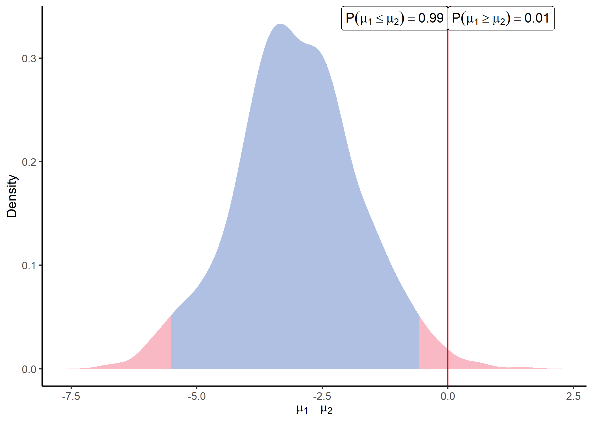

Bayesian toolbox for quantitative proteomics. In particular, this package provides functions to generate synthetic datasets, execute Bayesian differential analysis methods, and display results.
Installation
You can install the released version of ProteoBayes from CRAN with:
install.packages("ProteoBayes")You can install the development version of ProteoBayes like so:
# install.packages("devtools")
devtools::install_github("mariechion/ProteoBayes")ProteoBayes in a nutshell
Generate a synthetic proteomic dataset with the correct format:
library(ProteoBayes)
set.seed(42)
## Generate a dataset without imputations
data = simu_db()
## Generate a dataset with multiple imputations
data_imp = simu_db(multi_imp = TRUE)
data
#> # A tibble: 50 x 4
#> Peptide Group Sample Output
#> <chr> <int> <int> <dbl>
#> 1 Peptide_1 1 1 48.8
#> 2 Peptide_1 1 2 46.5
#> 3 Peptide_1 1 3 49.8
#> 4 Peptide_1 1 4 49.9
#> 5 Peptide_1 1 5 47.4
#> 6 Peptide_1 2 1 54.9
#> 7 Peptide_1 2 2 49.4
#> 8 Peptide_1 2 3 52.0
#> 9 Peptide_1 2 4 49.6
#> 10 Peptide_1 2 5 55.0
#> # i 40 more rows
data_imp
#> # A tibble: 250 x 5
#> Peptide Group Sample Output Draw
#> <chr> <int> <int> <dbl> <int>
#> 1 Peptide_1 1 1 51.8 1
#> 2 Peptide_1 1 1 51.3 2
#> 3 Peptide_1 1 1 51.6 3
#> 4 Peptide_1 1 1 51.9 4
#> 5 Peptide_1 1 1 51.8 5
#> 6 Peptide_1 1 2 52.5 1
#> 7 Peptide_1 1 2 52.6 2
#> 8 Peptide_1 1 2 52.0 3
#> 9 Peptide_1 1 2 52.0 4
#> 10 Peptide_1 1 2 50.8 5
#> # i 240 more rowsThe parameters of all posterior distributions can be computed thanks to:
post = posterior_mean(data)
post
#> # A tibble: 10 x 6
#> Peptide Group mu lambda alpha beta
#> <chr> <int> <dbl> <dbl> <dbl> <dbl>
#> 1 Peptide_1 1 48.8 6 3.5 6.81
#> 2 Peptide_1 2 51.9 6 3.5 17.2
#> 3 Peptide_2 1 51.5 6 3.5 3.54
#> 4 Peptide_2 2 53.5 6 3.5 10.6
#> 5 Peptide_3 1 18.6 6 3.5 6.61
#> 6 Peptide_3 2 20.9 6 3.5 11.8
#> 7 Peptide_4 1 44.0 6 3.5 7.00
#> 8 Peptide_4 2 46.0 6 3.5 17.8
#> 9 Peptide_5 1 34.0 6 3.5 30.7
#> 10 Peptide_5 2 37.7 6 3.5 5.40When considering Peptides independently (no inter-Peptides correlations), the method is unaffected by missing values and no imputation is necessary.
We can also consider correlations between Peptides by using a multivariate version of the method. In this context, missing values need to be imputed beforehand (multiple imputations is accepted), and the dedicated function is:
post_imp = multi_posterior_mean(data_imp)
post_imp
#> # A tibble: 250 x 8
#> Draw Group Peptide Peptide2 mu lambda nu Sigma
#> <int> <int> <chr> <chr> <dbl> <dbl> <dbl> <dbl>
#> 1 1 1 Peptide_1 Peptide_1 50.4 6 15 57.4
#> 2 1 1 Peptide_1 Peptide_2 50.4 6 15 -1.25
#> 3 1 1 Peptide_1 Peptide_3 50.4 6 15 11.5
#> 4 1 1 Peptide_1 Peptide_4 50.4 6 15 -8.05
#> 5 1 1 Peptide_1 Peptide_5 50.4 6 15 -3.92
#> 6 1 1 Peptide_2 Peptide_1 41.7 6 15 -1.25
#> 7 1 1 Peptide_2 Peptide_2 41.7 6 15 6.08
#> 8 1 1 Peptide_2 Peptide_3 41.7 6 15 2.85
#> 9 1 1 Peptide_2 Peptide_4 41.7 6 15 -0.206
#> 10 1 1 Peptide_2 Peptide_5 41.7 6 15 -2.40
#> # i 240 more rowsOnce parameters of the posterior distributions are available. We can sample from those distributions and visualise the differences between any groups for each peptide by using:
sample = sample_distrib(post)
plot_distrib(sample, group1 = 1, group2 = 2, peptide = 'Peptide_1' )
When comparing a large number of Peptides simultaneously, the function identify_diff() can be used to check for probable differences between groups for each Peptide:
identify_diff(post)
#> # A tibble: 10 x 10
#> Peptide Group mu CI_inf CI_sup Group2 mu2 CI_inf2 CI_sup2 Distinct
#> <chr> <int> <dbl> <dbl> <dbl> <int> <dbl> <dbl> <dbl> <lgl>
#> 1 Peptide_1 1 48.8 47.5 50.2 2 51.9 49.7 54.0 FALSE
#> 2 Peptide_1 2 51.9 49.7 54.0 1 48.8 47.5 50.2 FALSE
#> 3 Peptide_2 1 51.5 50.6 52.5 2 53.5 51.9 55.2 FALSE
#> 4 Peptide_2 2 53.5 51.9 55.2 1 51.5 50.6 52.5 FALSE
#> 5 Peptide_3 1 18.6 17.3 20.0 2 20.9 19.1 22.7 FALSE
#> 6 Peptide_3 2 20.9 19.1 22.7 1 18.6 17.3 20.0 FALSE
#> 7 Peptide_4 1 44.0 42.6 45.4 2 46.0 43.8 48.2 FALSE
#> 8 Peptide_4 2 46.0 43.8 48.2 1 44.0 42.6 45.4 FALSE
#> 9 Peptide_5 1 34.0 31.1 36.8 2 37.7 36.5 38.9 FALSE
#> 10 Peptide_5 2 37.7 36.5 38.9 1 34.0 31.1 36.8 FALSE